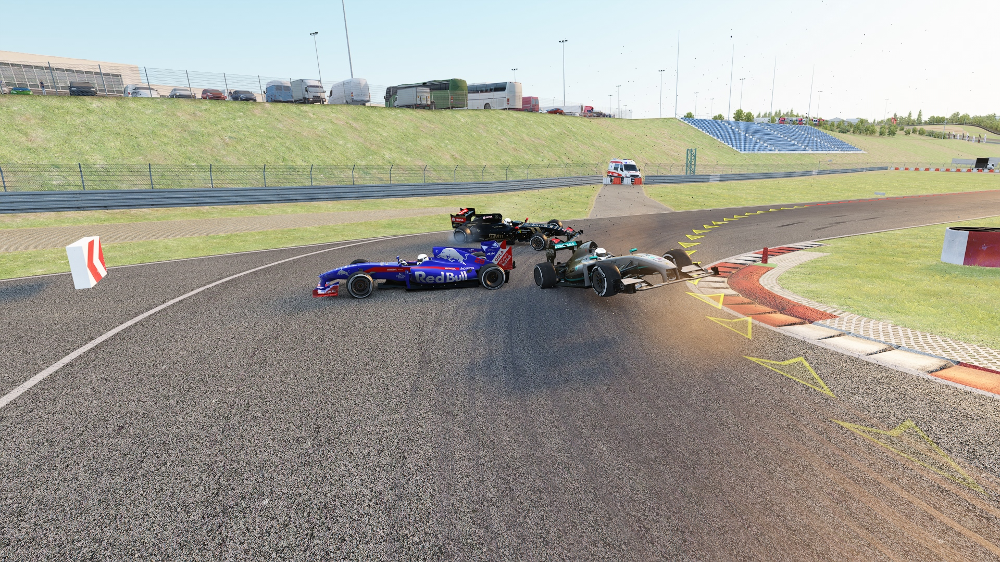
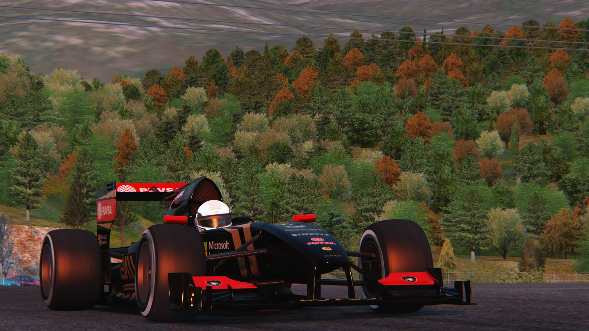
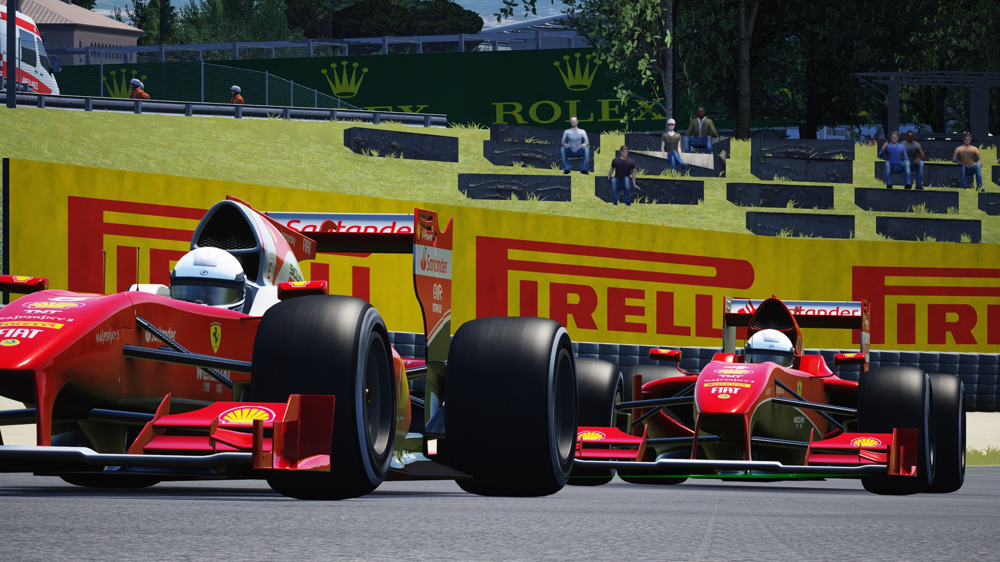
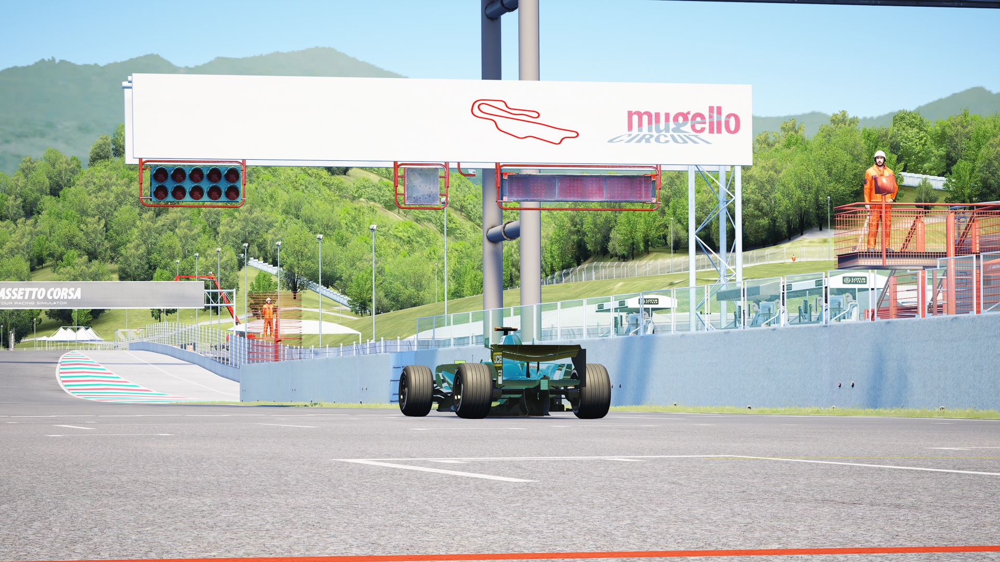
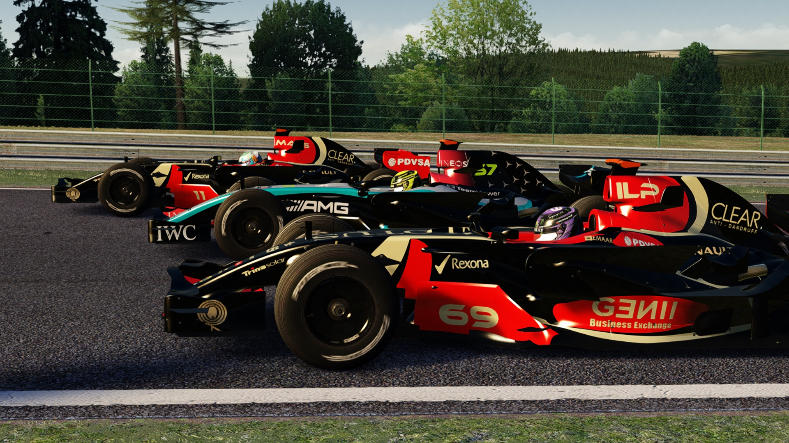
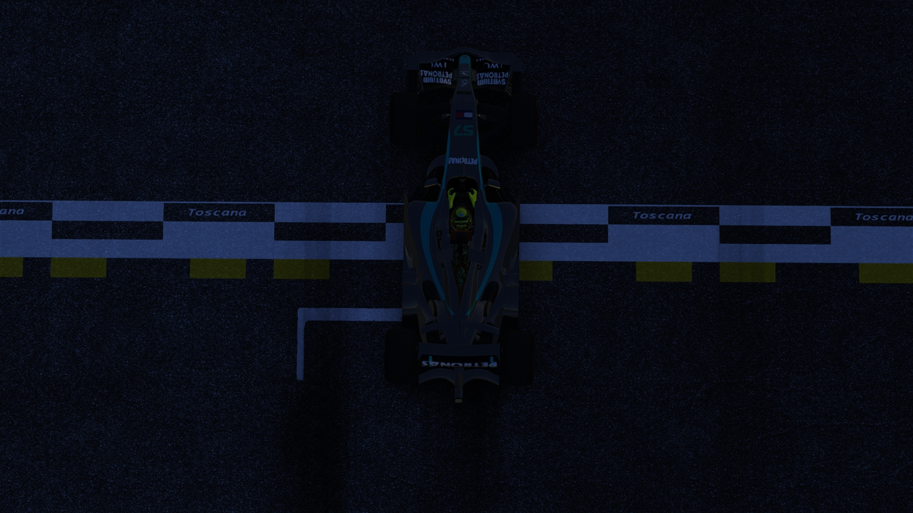

Story Page
Story Page
La Season 1 della Formula Z si aprì con grandi aspettative: Sir Perry sulla potente Mercedes, Kimi Fernandes e Alvaro Preguica in Lotus, e il rookie Skrall in McLaren. Tutto iniziò a Monza 1966, in una gara strana e carica di tensione. Tutti puntavano su Sir Perry, il più forte del lotto, mentre Kimi cercava solo di restargli vicino. Ma al Curvone accadde l’imprevisto: un problema alla ruota costrinse Sir Perry al ritiro. Kimi chiuse secondo — il primo di tanti secondi posti — Skrall arrivò ultimo, e contro ogni pronostico vinse il rookie Alvaro Preguica, alla sua prima gara. Una vittoria destinata a entrare nella storia. A Silverstone Sir Perry si riscattò con una vittoria netta, Kimi ancora secondo, mentre i rookie delusero. Ma a Spa accadde il momento più drammatico della stagione: Alvaro era primo, Sir Perry secondo, Kimi terzo con problemi al motore. All’ultima curva dell’ultimo giro, Skrall — doppiato — colpì in pieno Alvaro, rovinandogli la gara. Sir Perry vinse, ma l’episodio lasciò una ferita profonda. Alvaro si prese la rivincita a Imola, vincendo davanti a Sir Perry e a Kimi. A quel punto Sir Perry e il rookie erano pari punti, mentre Kimi iniziava a sentirsi schiacciato dall’ombra di Alvaro. Al Mugello, Preguica allungò ancora in classifica, mentre Skrall venne cacciato dalla McLaren e approdò in Ferrari in cerca di riscatto. Al Nürburgring, però, Sir Perry dominò senza problemi, riportandosi in testa: di nuovo pari punti. Fu lì che Kimi si risvegliò. Vinse a Grobnik, poi in Austria e ancora a Losail, con giro veloce: non voleva più essere “quello che arriva secondo”. In Ferrari arrivarono due nuovi rookie, Pablo Carpincho e Twenty-Miles. Alla sua prima gara, Pablo salì subito sul podio davanti ad Alvaro, mentre Twenty-Miles chiuse ultimo. Skrall, dopo altri fallimenti, venne definitivamente allontanato. Nel finale Sir Perry fu inarrestabile: vinse gare decisive, conquistò il Mondiale Piloti, mentre la Lotus si prese il titolo costruttori. Kimi chiuse secondo in campionato per un solo punto davanti ad Alvaro. La Season 1 si chiuse così: Sir Perry, campione del mondo. Alvaro Preguica, la nuova stella della Formula Z. Kimi Fernandes, sottovalutato, ma finalmente rivelatosi per ciò che era davvero. Skrall, un rookie che non riuscì a sopravvivere al grande palcoscenico. E Pablo Carpincho e Twenty-Miles, due nuovi talenti, con Pablo già pronto a brillare.  Nurburgring  Grobnik  New Rokies
La seconda stagione della Formula Z non iniziò con una rivoluzione, ma con una certezza:
il re era ancora lì.
La griglia cambiò volto, ma non anima.
La Lotus rimase con la sua coppia tormentata, Kimi Fernandes e Alvaro Preguica.
La Mercedes tornò con una novità: accanto a Sir Perry arrivò Giangiollo, chiamato a condividere il peso del campione.
Debuttarono due nuove scuderie:
Aston Martin, con Pablo Carpincho e uno Skrall deciso a riscrivere il proprio nome,
e Koenigsen, piccola ma feroce, con Doggy e Twenty-Miles.
Ma prima ancora che il campionato iniziasse davvero, il destino colpì.
Nei test del Bahrain, Giangiollo si infortunò gravemente alla gamba.
Mercedes rimase con una sola macchina.
Sir Perry era di nuovo solo.
La gara inaugurale si corse al tramonto del Bahrain, sotto un cielo rosso fuoco.
Sir Perry dominò senza pietà. Primo, lontano da tutti.
Secondo Pablo Carpincho, subito protagonista.
Doggy chiuse quarto con una prova solida.
Fu un inizio amaro per i rookie: Twenty-Miles si ritirò, Skrall faticò.
Il messaggio era chiaro: il campione non aveva perso nulla.
A Imola, però, la storia cambiò tono.
Sir Perry non vinse.
A vincere fu Pablo Carpincho, la sua prima vittoria in Formula Z.
Skrall arrivò quarto.
Aston Martin recuperò punti e fiducia.
La Lotus, invece, rimase nell’ombra. In silenzio. Troppo silenzio.
In Austria, il re rispose.
Sir Perry tornò primo.
Secondo ancora Pablo.
Non era una coincidenza: il giovane voleva la corona.
A Barcellona, qualcosa si mosse.
Sir Perry rimase perfetto.
Ma dietro di lui arrivò Kimi Fernandes, secondo.
Pablo si ritirò.
Twenty-Miles, contro ogni pronostico, chiuse quarto e portò punti pesanti alla Koenigsen.
Alvaro raccolse quello che poteva, senza brillare.
A Tokyo, la scena si ripeté:
Sir Perry primo.
Kimi secondo.
Ma quella gara entrò nella storia per un motivo diverso:
il primo podio di Twenty-Miles, in una corsa caotica e folle.
Alvaro arrivò ultimo.
Forse su di lui si erano create troppe aspettative troppo presto.
Al Mugello, Pablo Carpincho rientrò prepotentemente nel campionato.
Vinse grazie a una strategia perfetta… e al sacrificio del suo compagno di squadra.
Aston Martin tornò a sognare.
Ma mentre gli altri salivano e cadevano, Sir Perry non sbagliava mai.
Costante. Freddo. Implacabile.
Stava costruendo qualcosa di più grande di una semplice stagione.
A Miami, tornò Giangiollo.
Ma nulla cambiò davanti:
Sir Perry primo.
Kimi secondo.
Giangiollo partì bene, poi un incidente. Arrivò quinto.
Si ruppe la mano.
Da lì in poi, non avrebbe più corso.
Sir Perry restò ancora una volta solo.
A Monza, il tempio della velocità chiese il suo prezzo.
Doppietta Lotus, con un distacco enorme.
Sir Perry si ritirò per un problema al motore.
Fu l’unico vero colpo subito dal dominatore.
Ad Austin, l’ordine tornò naturale:
Sir Perry davanti,
Kimi dietro,
Pablo terzo.
Poi arrivò Silverstone.
Una gara che sarebbe stata raccontata per generazioni.
17 giri di battaglia pura tra Sir Perry e Kimi Fernandes.
Sorpassi, controsorpassi, nessuna paura.
All’ultima curva dell’ultimo giro, Kimi passò Sir Perry e vinse a casa sua.
Il pubblico esplose.
L’eterno secondo aveva vinto contro il re.
A Grobnik, Kimi vinse ancora.
Doppietta Lotus con Alvaro.
Ma la gara fu segnata da un incidente spaventoso:
Twenty-Miles, con problemi ai freni, non rallentò alla prima curva e colpì in pieno Pablo Carpincho.
La sua gara finì lì.
Quello schianto sarebbe rimasto nella storia della Formula Z.
A Spa, Kimi vinse la sprint… ma in gara arrivò ultimo per un problema al motore.
A Palmadera, Kimi vinse ancora.
La Lotus prese il comando nel campionato costruttori.
Ma nel mondiale piloti era troppo tardi.
Sir Perry era irraggiungibile.
Nelle gare successive arrivarono ancora vittorie:
Sir Perry primo,
Kimi secondo.
In Toscana, Sir Perry conquistò matematicamente il mondiale.
In Argentina, Pablo tornò finalmente alla vittoria.
Poi vinse Alvaro.
E vinse ancora ad Abu Dhabi.
La stagione si chiuse così:
Sir Perry, campione del mondo.
Kimi Fernandes, secondo. L’eterno secondo.
Alvaro Preguica e Pablo Carpincho, terzi a pari merito.
Twenty-Miles, quinto.
Doggy, sesto.
Giangiollo, ultimo, spezzato dal destino.
La storia ricordò la Season 2 con un solo nome:
PERRY vs KIMI FERNANDES
La rivalità eterna della Formula Z
Quando Sir Perry arrivò in Formula Z, il campionato aveva già un centro di gravità.
Era lui.
Freddo, preciso, dominante. Un uomo che non correva contro gli altri, ma contro il tempo.
Kimi Fernandes, invece, arrivò con un peso diverso.
Il talento c’era, la velocità pure.
Ma ogni volta che contava davvero, c’era sempre qualcuno davanti.
E quasi sempre, quel qualcuno era Sir Perry.
All’inizio, Kimi non odiava Sir Perry.
Lo rispettava.
Provava a seguirlo, a copiarne le traiettorie, a restare nel suo ritmo.
E arrivava secondo.
Secondo a Monza.
Secondo a Silverstone.
Secondo ovunque.
Sir Perry non parlava molto.
Non provocava.
Vinceva.
E questo, per Kimi, faceva più male di qualsiasi parola.
La Season 1 fu il primo atto.
Sir Perry campione del mondo.
Kimi battuto, ma non spezzato.
Quando tutti parlavano del duello con Alvaro Preguica, Kimi stava costruendo qualcosa dentro.
In silenzio.
Nella Season 2, la rivalità esplose davvero.
La Lotus mise Kimi nella condizione di lottare.
E Kimi iniziò a essere sempre lì.
Ma sempre dietro.
Bahrain: Sir Perry primo, Kimi lontano.
Barcellona: Sir Perry primo, Kimi secondo.
Tokyo: stesso copione.
Ogni gara era una ferita riaperta.
Kimi vedeva la Mercedes davanti a sé, curva dopo curva, giro dopo giro.
Sir Perry non lo guardava mai negli specchietti.
Non ne aveva bisogno.
Eppure, qualcosa cambiò.
A Silverstone, tutto si fermò.
Per 17 giri, Sir Perry e Kimi corsero come se il resto del mondo non esistesse.
Sorpassi duri, ma puliti.
Limite contro limite.
All’ultima curva dell’ultimo giro, Kimi Fernandes fece ciò che non aveva mai fatto.
Attaccò.
Passò Sir Perry.
Vinse.
Non fu solo una vittoria.
Fu una liberazione.
Sir Perry arrivò secondo.
Non arrabbiato.
Non sorpreso.
Solo consapevole.
Da quel giorno, la rivalità cambiò forma.
Sir Perry capì che Kimi non era più solo “quello dietro”.
Era l’unico che poteva davvero metterlo in difficoltà.
E Kimi capì una verità ancora più dura:
battere Sir Perry una volta non bastava.
A Grobnik, Kimi vinse ancora.
A Palmadera pure.
Ma nel campionato, Sir Perry era già troppo avanti.
Costante. Implacabile. Dominatore.
Quando Sir Perry vinse il mondiale, Kimi era secondo.
Di nuovo.
La storia fu crudele, ma onesta.
Sir Perry divenne il denominatore comune di ogni stagione.
Kimi, l’uomo che gli arrivava sempre più vicino, ma non abbastanza.
Non c’era odio tra loro.
C’era qualcosa di peggio: rispetto assoluto.
Sir Perry sapeva che senza Kimi, le sue vittorie avrebbero contato meno.
Kimi sapeva che senza Sir Perry, non avrebbe mai scoperto quanto fosse davvero forte.
E così nacque la leggenda della Formula Z:
Il Dominatore e l’Eterno Secondo.
Due destini intrecciati.
Due strade parallele.
E una domanda che rimane aperta:
e se, un giorno, Kimi arrivasse primo… davanti a Sir Perry?

Mugello

Spa

Toscana